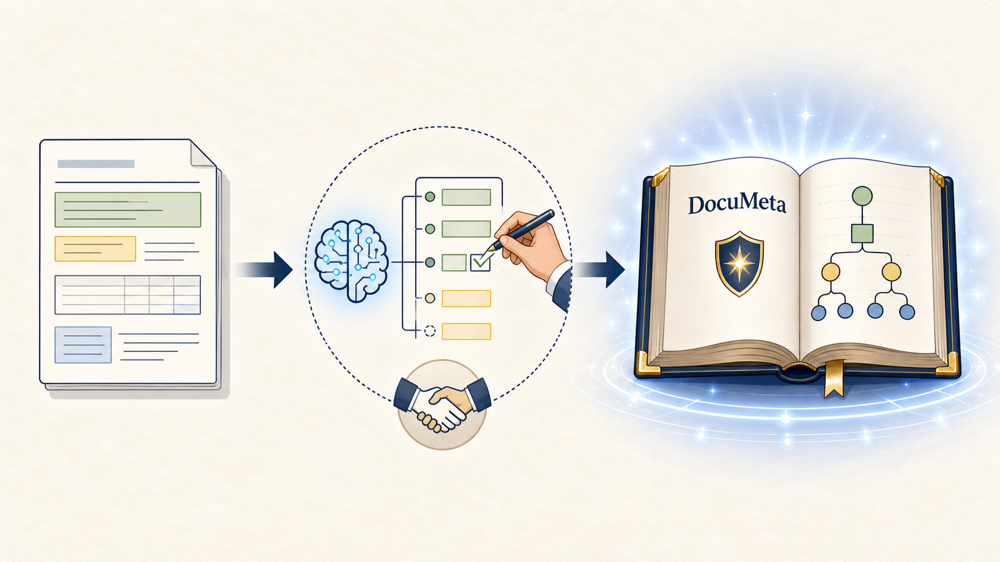
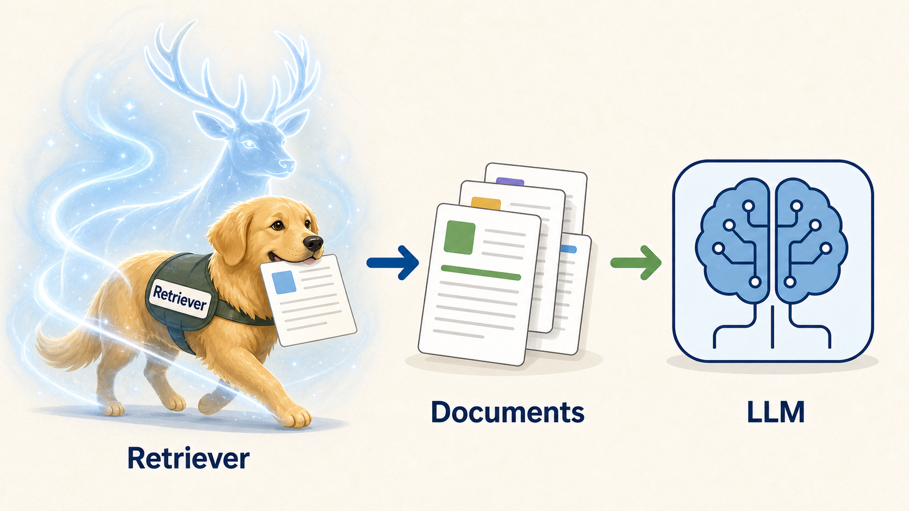
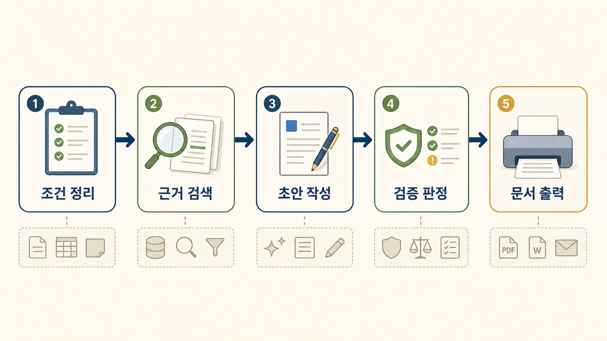

조직형 AI 문서 작성 흐름과 DocuMeta, RAG, 오픈소스 도구
김호성
AI가 문서를 대신 쓰는 것이 아니라, 문서가 만들어지는 길을 정리한다.
좋은 문장보다 먼저, 업무 문서가 무엇으로 성립하는지 본다.
GPT는 이미 문장을 잘 쓴다. 하지만 조직 문서는 문장만으로 끝나지 않는다.
업무 문서는 문장력이 아니라 조건의 묶음으로 관리된다.
제품화 대상으로는 자주 나오고 조건이 명확한 문서부터 시작한다.
결과는 꽤 그럴듯하다.
자동화는 문서 원문에서 바로 시작되지 않는다. 먼저 문서 안의 반복 구조를 태깅해야 한다.

docu meta는 문서를 만들기 전에 미리 고정해두는 조건 묶음이다.
MD, YAML로 시작해서 DB와 관리자 화면으로 확장할 수 있다.
문서의 기준이 먼저 고정되기 시작한다.
AI가 마음대로 쓰지 않게 붙잡아주는 수호 장치이다. RAG는 필요한 근거를 세워준다.

Retrieval: 작업계획서, 운영지침, 이전 안내문 같은 근거를 찾는다.Augmented: 찾은 근거를 초안 작성 맥락에 붙인다.Generation: 근거를 바탕으로 초안을 만든다.우리가 쓰는 RAG는 가드레일이 설 수 있게 받쳐주는 스캐폴딩이다.
| 오해 | 답 |
|---|---|
| RAG는 벡터 DB와 같은 말인가? | 아니다. 벡터 DB는 자주 쓰는 저장소일 뿐이고, RAG는 검색된 근거를 생성 흐름에 붙이는 방식이다. |
| RAG가 환각을 만든다고 봐야 하는가? | 아니다. 환각을 없애주지는 않지만, 근거를 붙여 환각을 줄이는 데 도움을 준다. |
| RAG만 붙이면 문서 품질이 저절로 좋아지는가? | 아니다. 문서 조건, 근거 품질, 검증 규칙이 함께 있어야 안정된다. |
| 공문서에도 RAG가 꼭 필요한가? | 모든 문서에 필수는 아니지만, 근거가 바뀌고 확인 책임이 있는 공문서에는 거의 필수에 가깝다. |
앞에서 만든 문서 조건이 실제 제품과 오픈소스 흐름으로 어떻게 확장되는지 살펴본다.
완성본만 보는 것이 아니라, 문서가 어떤 조건에서 출발해 어떤 근거와 검증을 거쳤는지 따라갈 수 있어야 한다.
이 단계에서는 샘플 문서에서 템플릿 초안을 만들고, 사람이 검토할 DocuMeta 프레임으로 고정하는 과정을 확인한다.
여기서는 문장 초안보다 DocuMeta 프레임이 더 중요하다. docu meta는 사람이 손본 문서 조건을 LLM과 출력 어댑터가 함께 읽을 수 있게 만든 구조화 입력이고, 시연 3의 핵심은 샘플 문서에서 템플릿 초안을 만들고 사람이 검토할 DocuMeta 프레임을 확정하는 장면이다. RAG는 시연 4에서 근거 문서를 가져와 빈 슬롯을 채우고, 검증 게이트는 이 DocuMeta를 출력으로 넘길지 결정한다.
AI가 반복 구조를 먼저 찾아내고, 사람이 기준을 확정해 <표준 주문서>로 만든다.
이 단계에서는 같은 문서 조건이 출력 형식마다 어떻게 이어지는지 실제 결과 화면으로 확인한다.
시연 4에서는 템플릿 초안을 다시 만들지 않는다. 시연 4에서 완성된 DocuMeta가 그대로 출력 어댑터로 넘어온 상태를 보여준다. 특히 DocuMeta의 table_contracts가 결재 표, 점검 정보 표, 하단 메타데이터 표로 표현되는 장면을 보여준다. Quarto는 HTML 검토본, Typst는 PDF 조판본, HWPX는 제출 파일 후보라는 역할 구분을 강조한다.
만들어진 docu meta는 지속적으로 다양한 출력 형식을 이어주는 문서 조건이다.
오픈소스 이름부터 고르면 제품이 도구에 끌려간다.

나눈 역할마다 선택할 수 있는 도구가 달라진다.
| 역할 | 후보 |
|---|---|
| 조건 관리 | YAML, JSON Schema, Baserow, NocoDB |
| RAG 연결 | FAISS, LangChain, LangGraph, pgvector |
| 임베딩/검색 | Hugging Face, sentence-transformers, Qdrant, Chroma |
| 저장소 | PostgreSQL, LanceDB, OpenSearch |
| 모델 실행 | Ollama, vLLM, llama.cpp, Hugging Face, OpenAI 호환 API |
| 제품 API | FastAPI, PostgreSQL |
| 출력 | Quarto, Typst, Pandoc, HWPX 어댑터 |
결국 제품은 한 도구가 아니라 연결된 컴포넌트의 조합이다.